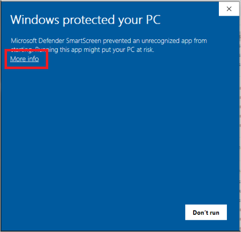
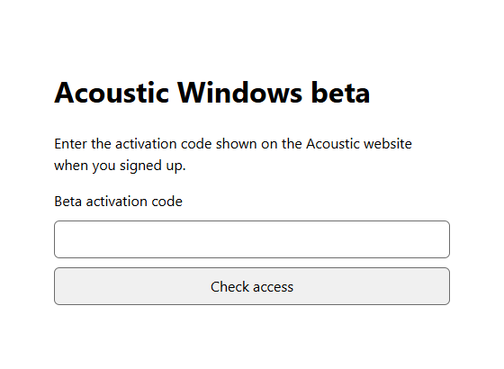

Try 1 · the ceiling
← Back to Acoustic
Acoustic sound guide
Find a sound for your room, browse the recordings, or look deeper into how the app works.
Find your starting sound
Two honest taps and the shelf points you at one place to begin — a suggestion for your first session, not a prescription. Your ears decide the rest.
1 · What is the room doing?
2 · What are you here to do?
Pick one from each row above — I'll point you somewhere sensible.
Explore the sound library
No store, no subscriptions inside, no “unlock the good rain” later. Here is the entire shelf, straight from the shipping build — and a real index of it, if you want to go looking.
All 76 files are CC0, Ogg/Opus, 48 kHz stereo. 59 are field recordings across 15 families; 17 are music works across seven. Search the real titles here — nothing leaves the page, nothing is stored.
Filter
How to read a row. Title on the left; whether it is a recording or a music work, its family and its length; and, where it is one, which of the ten blends uses it. The chip can only show what the bundle contains — the shelf is fixed at 76 files.
Where the energy actually sits
Not every recording is shaped the same way.
Every file in the bundle was measured once, and those measurements ship inside the app. The share of each recording's energy in the low, middle and high part of the eight-band range is a real number — so the shelf sorts itself by what it actually contains. Move the buttons: this is the manifest's own arithmetic, drawn as bars.
The three groups are drawn from the engine's band edges: 80–315 Hz (bands 1–2), 315 Hz–1.25 kHz (bands 3–5) and 1.25–7.8 kHz (bands 6–8).
Sort the shelf by
- low 80–315 Hz
- mid 315 Hz–1.25 kHz
- high 1.25–7.8 kHz
-
59
recordingsfield recordings, all CC0
Mountain refuge, cave & stream, ocean with distant whales, soft fireside — and 55 more. Water, forest, fire, rooms. Registered, labelled and bundled; never streamed, never synced.
-
17
musicpublic-domain works
Plain works chosen for calm — piano at the default, more in the shelf. Public domain, so there is no licensing fuss and no rights-holder to answer to. Credits ship in the app, not on this page.
-
∞
generatedcolour noise, made live
Steady colour noise, generated by the engine in real time — no files to download, no loop points, no seam where you notice the repeat.
-
You
choicesrate it; it listens — to you, not your room
Like, Love or Not for me on any sound. The app orders what surfaces next using a fixed rule set on the phone. Nothing is trained, nothing fitted, and the answers never leave the device — clearing your ratings clears the profile.
Ten blends, and what is actually in them.
Some entries in the library are single recordings. Ten of them are two at once — a bed and one accent, mixed to fixed amounts. Here is the whole set, with both sources named, so nothing about your sound is a mystery. Move the fader: the amounts are the ones the app uses.
Pick a blend on the left — or the buttons above, on a phone.
A blend is a recipe, not a measurement: the two amounts are the mix the app ships, and the bar under them is drawn from those numbers. What it sounds like in your room is a different question, and it is yours to answer.
How Acoustic shapes sound
1
Pick your sound
59 CC0 field recordings — rain, cafés, rivers, rooms — 17 public-domain music works, or steady colour noise, generated live on the phone. Your taste, your call.
2
Eight gentle bands
The engine shapes the sound across eight bands, 80 Hz to 7.8 kHz, so the result stays even and calm instead of hissy or boomy.
3
One ceiling, yours
You set the loudest it may ever play, once. Every automatic move, every layer, every queued change is clamped below it — enforced in the audio path, not just the interface.
Two honest benches. No install, no engine.
The live engine demo is gone — it needed your browser to fetch a 95 KB WebAssembly blob on demand, and too many real machines couldn't. What remains here always works: two drawings built from the real shipped values. The actual engine plays on your phone, after you ask for it.
Try 2 · the eight bands
One honest admission of scale: the on-phone app renders the same shape-table these drawings are drawn from — measure it there, with your ears, and judge us on that. A browser sketch is exactly that: a sketch.
Steal back the quiet, one hour at a time.
06:40
The house before anyone else is up. Rain on a window that isn’t yours, one record to ten, and your coffee still hot when the boil kettle rattles downstairs.
10:15
The open office at full volume. Three overlapping standups. Forty-five minutes of a steady shaped bed while the sprint wall loses its grip on your attention.
15:30
The study session. Exams, essays, code reviews — whatever your mountain is. Colour noise, no files, your ceiling, and the phone face down.
22:10
Reading before sleep. Public-domain piano, softer each chapter, volume limit already set at 4 p.m. so the midnight brain doesn’t decide otherwise.
The room is allowed to be loud.
Your head doesn’t have to be.
What happens, from tap to stop.
The short version of what the app does between the moment your thumb leaves the Start button and the moment it doesn't.
1 · Start
You press it. Always you.
Nothing starts by itself — no schedules, no geofencing, no “smart” auto-on. The session begins when you say so.
2 · Listen
Only while you'd notice.
In an Auto session the phone samples the room briefly, only then — a few seconds at a time, never otherwise. Leave, lock or stop, and listening ends.
3 · Shape
Within your ceiling.
It eases the blend inside the limit you set, clamped in the audio path — the UI can't paint you out of your own ceiling.
4 · Stop
Stop means stop.
One tap ends sound and listening. No fade of twenty seconds, no “are you sure?”, no resumed session unless you press Start again.
What you give up for silence — usually.
Other tools exist. Some are for hardware, some are for your ears, some are for your wallet. Here is where Acoustic sits, hedged honestly because the comparison is complicated.
| Acoustic in testing | White-noise & sleep apps | ANC headphones | |
|---|---|---|---|
| What it is | Steady shaped masking on the phone | Plays noise or loops | Cancels incoming sound |
| Price now | Free for testers | Usually freemium or subscription | Hardware, one-time cost |
| Internet required | Never — no INTERNET permission | Often yes | No |
| Account | None, ever | Frequently required | — |
| Sound you get | 59 CC0 recordings, 17 PD works, colour noise | Company-owned beds, ads in free tier | Nothing added — it subtracts |
| Hears your room | Only in a session you start (Auto) | Some apps do, always | No |
| Privacy posture | Phone-only; preferences excluded from backup | Depends on vendor | Hardware, no data |
ANC and masking solve different problems — ANC subtracts, Acoustic adds. Many testers carry both: ANC for planes, Acoustic for the desk. On your phone, swipe the table sideways.
Install Acoustic on Windows
Acoustic is a student project, and we haven’t been able to sign the Windows installer yet. You may see a Microsoft Defender SmartScreen prompt when you open it.
-
Download Acoustic
Get the Windows beta and save your activation code. For an update, use your saved code and quit Acoustic before running the installer.
-
Open the installer from Downloads
If you see Windows protected your PC, select More info. Check that the file is the Acoustic installer you downloaded from this site, then select Run anyway if Windows offers it. If your device blocks the install, check with its administrator.

SmartScreen example from Microsoft Learn · CC BY 4.0 -
Open Acoustic and activate
When setup finishes, open Acoustic Desktop App from the Start menu. If prompted, paste the code from the website and select Check access.

The Acoustic beta activation screen.
Verify the installer with SHA-256
In PowerShell, replace the path below with the path to your downloaded installer and run the command. Compare the output to the published SHA-256.
Get-FileHash -Algorithm SHA256 -LiteralPath "C:\path\to\installer.exe"
Windows x64
The honest fine print.
It took three people, a private repository and a lot of evenings to make this small. Here is exactly what it is — and what it is not.
What it is
- An offline masking instrument. The phone plays steady, shaped sound; that is all.
- All bundled. 59 CC0 field recordings and 17 public-domain works, inside the install. No streaming.
- One ceiling you set. Every automatic move is clamped below it — in the audio path, not just the UI.
- Private by construction. Preferences stay on the phone, excluded from backup and transfer.
- In testing, free. Three people behind it, no ads to sell, no account to feed.
What it is not
- Not noise cancellation. It adds shaped sound; it does not subtract anything from your room.
- Not a medical device. A comfort tool. Not treatment, not hearing protection, not a diagnostic.
- Not calibrated in dBA. Levels are percentages of your ceiling — the app says so on screen.
- Not outcome evidence. Whether it helps is yours to judge, on your phone, with your ears.
- Not a hidden listener. The mic listens only while a session you started is running — never otherwise.
Will Acoustic run on my phone?
Acoustic needs Android 10 or newer and a 64-bit processor (arm64-v8a; x86_64 for emulators). Nothing else. If your answer is “yes”, email for a build and it runs today.
Three people. One ceiling.
Meet the three people working on Acoustic.
Saksham Loonker
CEO & CTO — Sole Developer
Mahir Thadani
COO
Aum Sonnenblick
CMO
All three read the testing email. If a reply takes a day, we’re shipping something, not ignoring you.
Privacy and Auto questions
Will my phone be spied on?
No. The manifest declares no INTERNET permission — the operating system refuses the request before the app can even try. Preferences live on the phone, excluded from backup. The mic listens only during a session you start.
Is this a medical device?
No. It is a comfort tool for noisy rooms. It is not hearing protection, not treatment, and not a diagnostic — and it cannot promise to erase a specific sound, so it doesn't try.
What does Auto actually measure?
The level and rough spectral shape of the room, in short windows, only while a session you started is running. A phone on a desk is not a probe at your ear — which is why the app calls the result provisional, not cancellation.
Can I delete everything?
Yes. Ratings clear from inside the app — the profile is a fixed rule set, not a vault. Uninstalling removes your preferences with the app. There is no export to worry about because there is nothing to upload in the first place.